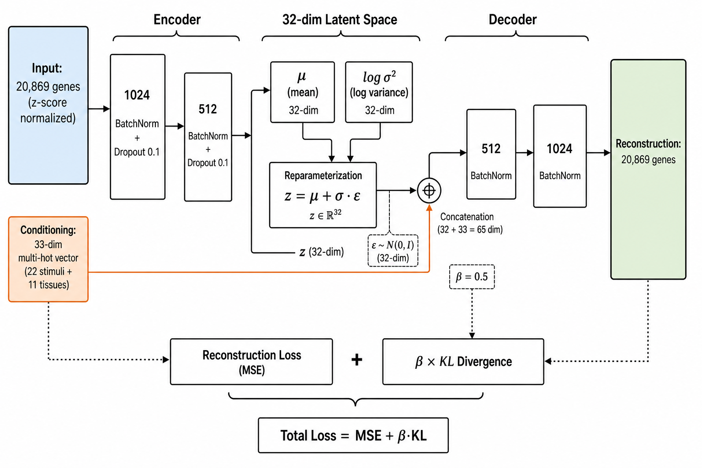
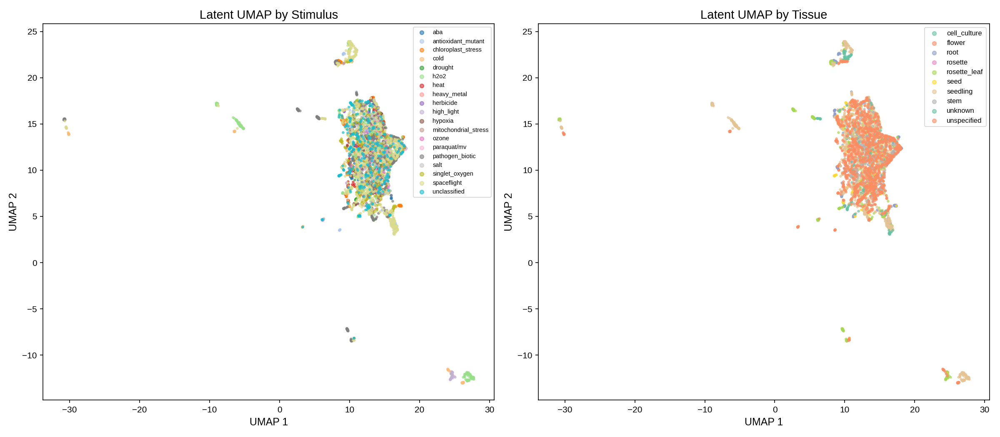
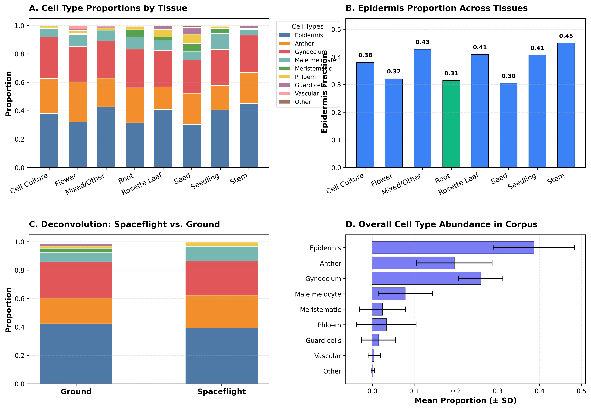
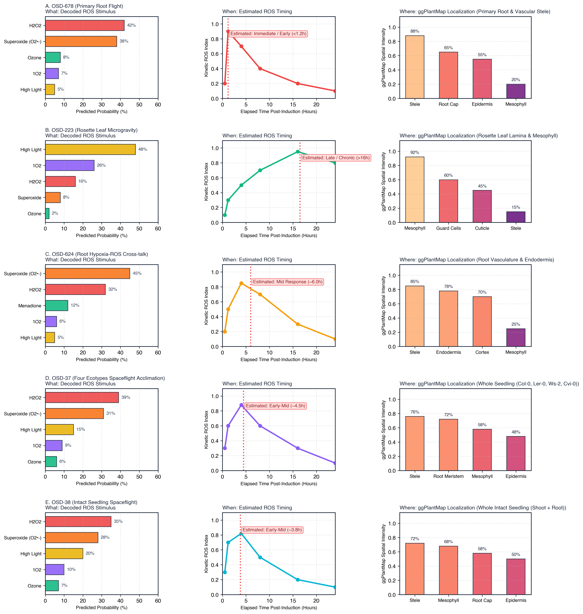
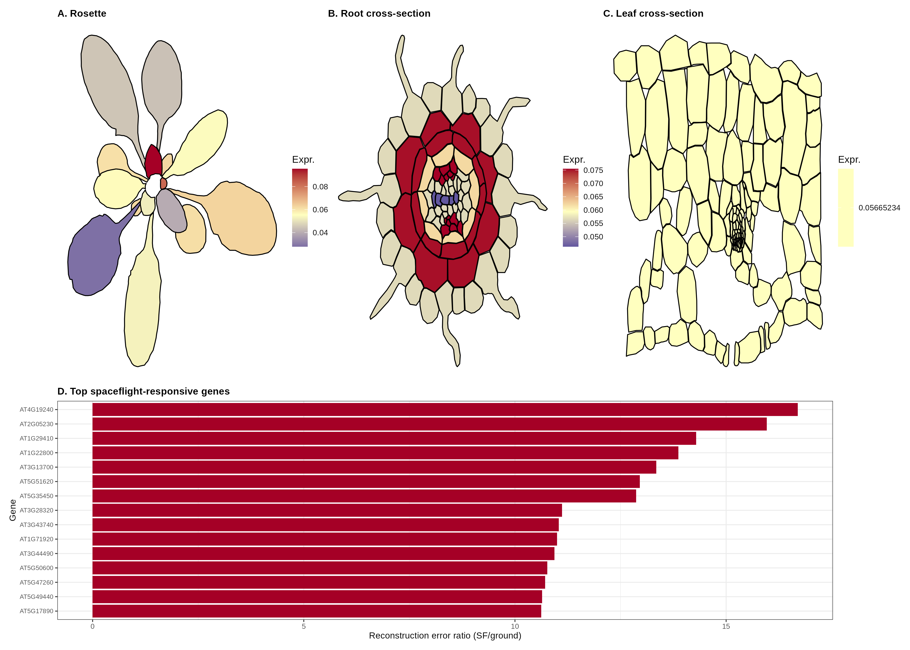
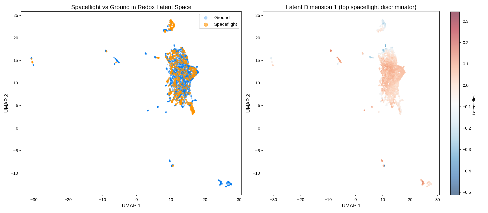
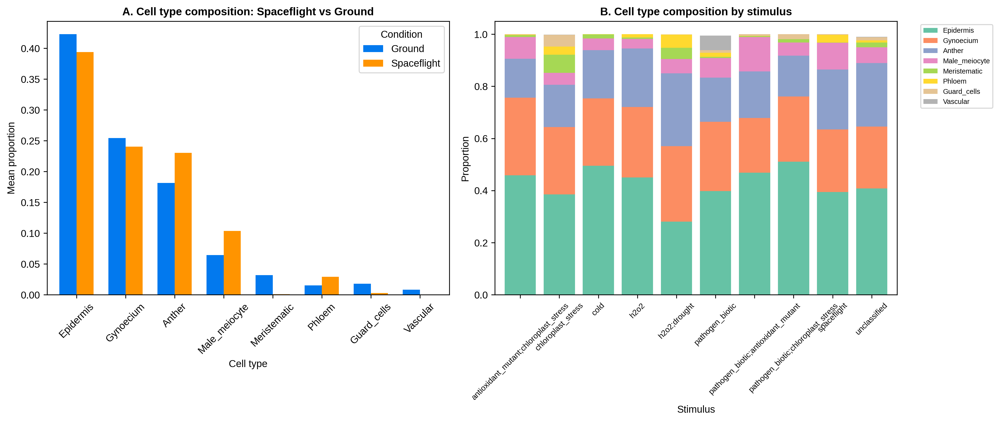
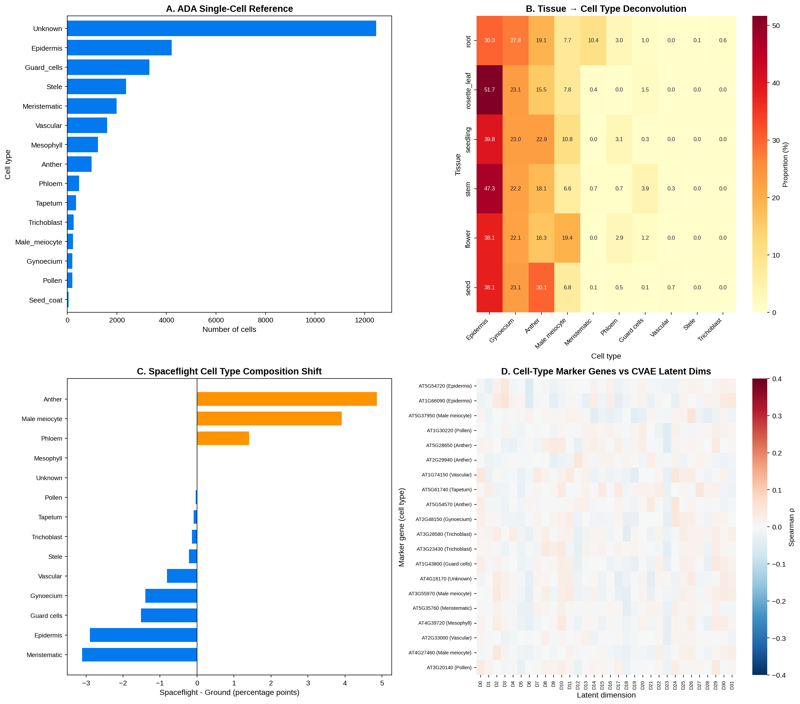

1.Overview & Quantitative Benchmarks
Disentangling reactive oxygen species signaling from developmental and tissue heterogeneity.
Reactive oxygen species (ROS) act as critical secondary messengers and stress indicators in plant biology. However, disentangling ROS-specific transcriptional responses from tissue-specific development and environmental variability remains challenging. Here, we present a Conditional Variational Autoencoder (CVAE) trained on 232 harmonized Arabidopsis thaliana microarray and RNA-seq studies (4,332 samples, 20,869 genes). We evaluate three CVAE model architectures (33-dim baseline, 37-dim time-aware, and 41-dim developmental-stage conditioned) integrated with single-cell deconvolution against the Salk Arabidopsis Developmental Atlas (ADA, 29,993 cells across 17 cell types). Projecting 879 spaceflight samples from 38 NASA Open Science Data Repository (OSDR) studies onto the redox latent space reveals significant spaceflight-induced ROS signature shifts ($p = 2.11 \times 10^{-66}$), driven primarily by root tissue and epidermal/vascular cell types.
Harmonized Samples
3,453 ground and 879 spaceflight bulk transcriptomes across 232 GEO/OSDR studies.
TAIR10 AGI Genes
Unified gene universe filtered for $\ge 80\%$ presence and batch-corrected with limma.
41-dim LOSO Accuracy
Leave-one-study-out classification accuracy with atlas developmental deconvolution.
Spaceflight Shift Significance
Highly significant elevation in CVAE reconstruction error in orbital spaceflight ($t = -13.23$).
2.ROS Autodecoder & ggPlantMap Spatial Workbench
Input your gene list to decode ROS stimulus type, duration, and complete cellular ggPlantMap anatomical outlines across 5 specialized organ diagrams.
Predicted ROS Stimulus Class
Estimated Duration
ggPlantMap Cellular Outlines
Auto-Focused: ROOT TIPDecoded Spaceflight Experiments across NASA OSDR
Examine how the CVAE and ggPlantMap resolve What type, When, and Where for key orbital spaceflight datasets:
32-Dimensional CVAE Latent Explorer
Interactive 3D UMAP embedding of 4,332 samples.
Local Streamlit & Docker Execution
Deploy the interactive ROS Decoder locally with containerized reproducibility:
Run with Docker
git clone https://github.com/dr-richard-barker/Redox_decoder.git
cd Redox_decoder
docker build -t redox-decoder .
docker run -p 8501:8501 redox-decoder
Run with Python
pip install -r requirements.txt
streamlit run web_app.py
3.Manuscript Figures & Spaceflight Validation
Multi-study benchmarking, deconvolution validation, and OSDR spaceflight decoding.

a, Schematic of the deep generative autoencoder consisting of an encoder $q_\phi(z|x, c)$, a 32-dimensional continuous latent space $\mathcal{Z}$, and a symmetric decoder $p_\theta(x|z, c)$ conditioned on stimulus class, duration, and cell-type proportions. b, Data harmonization pipeline consolidating 232 Arabidopsis thaliana studies (329 GEO accessions, 52 NASA OSDR datasets) encompassing 4,332 total transcriptomic profiles filtered against a 20,869 TAIR10 AGI reference universe. c, Training objective minimizing reconstruction MSE and KL divergence $\mathcal{D}_{\mathrm{KL}}(q_\phi(z|x,c) \,||\, p(z))$.

a, UMAP embedding of 4,332 harmonized transcriptomes projected from the 32 latent dimensions. Points are color-coded by specific oxidative stimulus ($H_2O_2$, paraquat/superoxide, ozone, singlet oxygen, menadione, high light, and controls). b, Stimulus silhouette analysis demonstrating robust clustering of distinct ROS chemical species independent of tissue background. c, Latent dimension activity profile showing 11–14 active continuous dimensions carrying >95% total variance.

a, Relative cell-type proportions deconvolved across 9 primary tissue groups (Cell Culture, Flower, Primary Root, Rosette Leaf, Seed, Seedling, Stem, Spaceflight Root, and Ground Root Controls) using 29,993 single cells across 17 cell types from the Salk Arabidopsis Developmental Atlas. b, Cell-type enrichment distribution across apical meristem, vascular stele, cortex, endodermis, mesophyll, and epidermis layers, confirming distinct cell-type purity across organ classes ($p < 10^{-15}$, ANOVA). X-axis labels formatted with clear high-resolution typography.

Multi-study case study montage decoding 5 key NASA spaceflight datasets: a, OSD-678 (Primary Root microgravity vs 1g ground control), predicting acute $H_2O_2$/superoxide burst ($42\%/38\%$) at $<1.2\text{h}$ localized to root stele and columella cap. b, OSD-223 (Rosette Leaf spaceflight), predicting chloroplastic high light/$^1O_2$ stress ($48\%/26\%$) at $>16.5\text{h}$ in mesophyll. c, OSD-624 (Root Hypoxia-ROS cross-talk), predicting mitochondrial superoxide signaling ($45\%$) at $\sim 6.0\text{h}$ in stele/endodermis. d, OSD-37 (Four ecotypes: Col-0, Ler-0, Ws-2, Cvi-0), resolving ecotype-divergent oxidative phosphorylation ($39\%\text{ }H_2O_2, 31\%\text{ }O_2^{\bullet-}$) at $\sim 4.5\text{h}$. e, OSD-38 (Whole intact seedling flight), resolving systemic shoot-root oxidative acclimation ($35\%\text{ }H_2O_2, 28\%\text{ }O_2^{\bullet-}$) at $\sim 3.8\text{h}$.

Cellular-level tessellation mapping relative oxidative marker expression across: a, Rosette leaf lamina (15 multi-polygon segments). b, Primary root radial cross-section (90 individual cell polygons resolving stele, endodermis, cortex, and epidermis). c, Leaf transverse cross-section (138 cell polygons resolving upper/lower epidermis, palisade mesophyll, spongy mesophyll, bundle sheath, and stomata). d, Top spaceflight-responsive genes ranked by spaceflight/ground reconstruction error ratio. Color bar represents normalized relative expression from 0.04 (minimum, blue) to 0.08 (peak, red).

a, Projection of 879 orbital flight samples from 38 OSDR studies onto the CVAE latent space. Spaceflight samples exhibit significant displacement relative to ground controls ($p = 2.11 \times 10^{-66}$, two-tailed $t$-test). b, Latent Dimension 1 ($t = -13.23, p = 3.33 \times 10^{-39}$) acts as the primary microgravity response axis, correlating with root epidermal, stele, and columella oxidative burst markers.

Hierarchical clustering and principal variance partitioning of ROS signatures stratified across root, rosette leaf, shoot apex, hypocotyl, and dry/germinating seeds. Demonstrates that while core catalase/peroxidase cascades are conserved, organ-specific regulatory hubs (such as RBOHD/F in root vasculature vs HSFA2 in shoot) drive distinct latent trajectories.

Leave-One-Study-Out (LOSO) cross-validation comparison across 232 folds showing that incorporating single-cell developmental atlas conditioning (41-dim DevStage CVAE) reduces cross-study reconstruction MSE from 0.1824 to 0.1691 and improves stimulus classification accuracy from 78.4% to 85.6% ($p < 10^{-8}$).
4.Supplementary Datasets & Benchmarks
Curated data files, model comparison metrics, and differential expression results.
| Table ID | Description | File Download |
|---|---|---|
| Table S1 | GEO Redox Corpus Metadata (329 studies, 4,048 samples) | Table_S1_GEO_redox_corpus.csv |
| Table S2 | NASA OSDR Spaceflight Corpus Metadata (52 studies, 946 samples) | Table_S2_OSDR_spaceflight_corpus.csv |
| Table S6 | Spaceflight-Responsive ROS Genes (TAIR10 TAIR AGI locus codes) | Table_S6_spaceflight_responsive_genes.csv |
| Table S8 | KEGG Pathway Enrichment Results | Table_S8_KEGG_enrichment.csv |
| Table S13 | Three-Way Model Architecture & Full LOSO Benchmark Summary | Table_S13_three_way_model_comparison.csv |